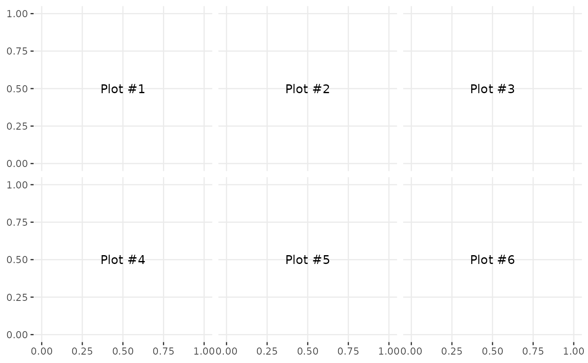
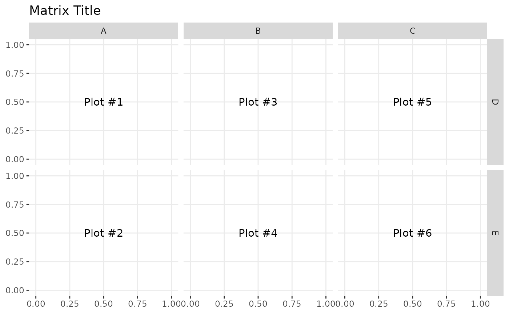
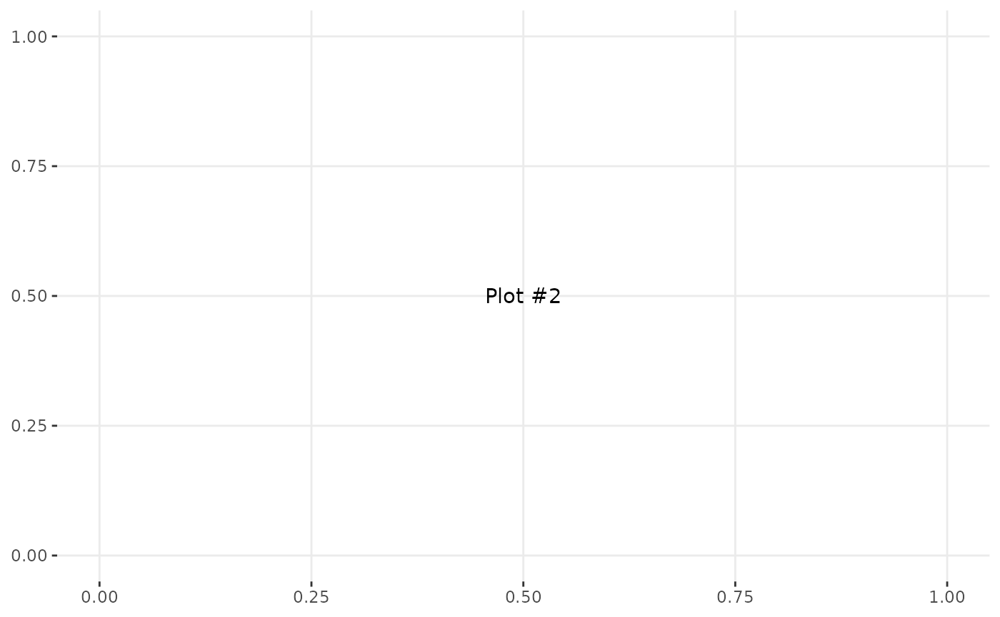
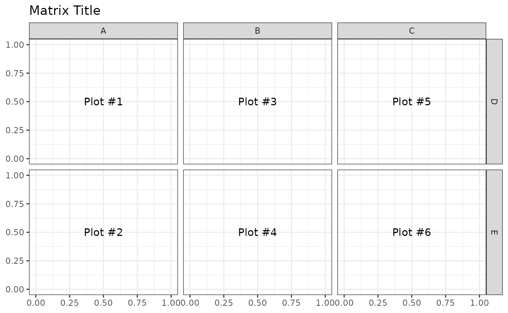
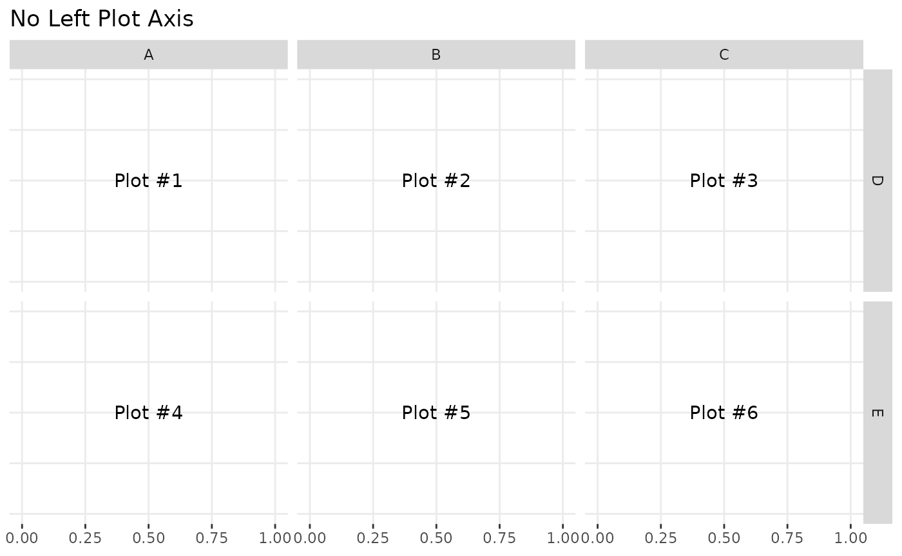
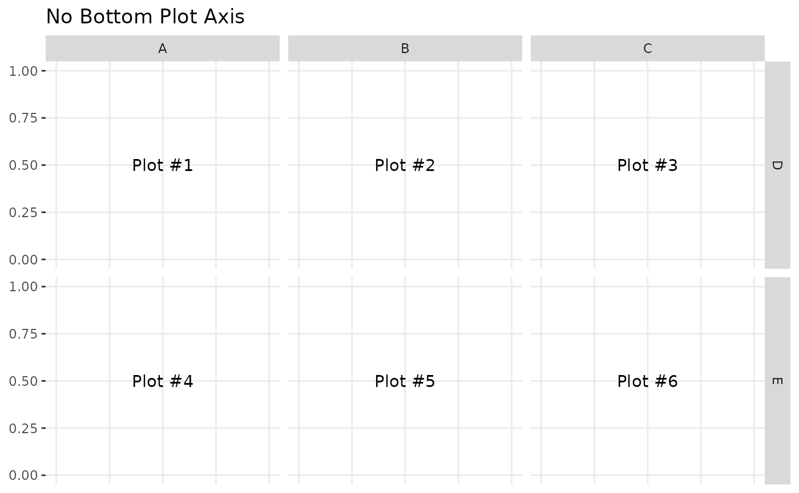
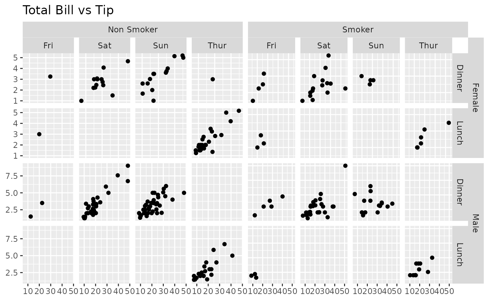
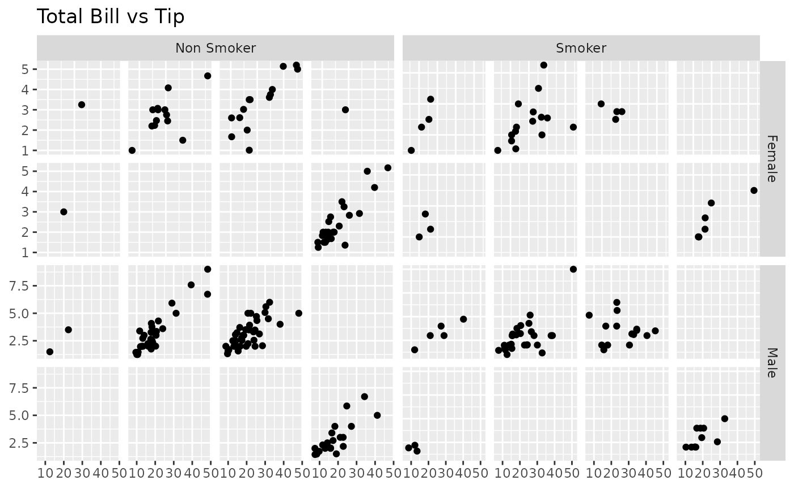

library(GGally) #> Loading required package: ggplot2 #> Registered S3 method overwritten by 'GGally': #> method from #> +.gg ggplot2
GGally::ggmatrix()
ggmatrix() is a function for managing multiple plots in a matrix-like layout. It was designed to adapt to any number of columns and rows. This allows for very customized plot matrices.
Generic Example
The examples below use plots labeled 1 to 6 to distinguish where the plots are being placed.
plotList <- list() for (i in 1:6) { plotList[[i]] <- ggally_text(paste("Plot #", i, sep = "")) } # bare minimum of plotList, nrow, and ncol pm <- ggmatrix(plotList, 2, 3) pm

# provide more information pm <- ggmatrix( plotList, nrow = 2, ncol = 3, xAxisLabels = c("A", "B", "C"), yAxisLabels = c("D", "E"), title = "Matrix Title" ) pm

# display plots in column order pm <- ggmatrix( plotList, nrow = 2, ncol = 3, xAxisLabels = c("A", "B", "C"), yAxisLabels = c("D", "E"), title = "Matrix Title", byrow = FALSE ) pm

Matrix Subsetting
Individual plots may be retrieved from the plot matrix and can be placed in the plot matrix.
pm <- ggmatrix( plotList, nrow = 2, ncol = 3, xAxisLabels = c("A", "B", "C"), yAxisLabels = c("D", "E"), title = "Matrix Title" ) pm
p2 <- pm[1,2] p3 <- pm[1,3] p2

p3pm[1,2] <- p3 pm[1,3] <- p2 pm
Themes
library(ggplot2) pm <- ggmatrix( plotList, nrow = 2, ncol = 3, xAxisLabels = c("A", "B", "C"), yAxisLabels = c("D", "E"), title = "Matrix Title", byrow = FALSE ) pm <- pm + theme_bw() pm

Axis Control
The X and Y axis have booleans to turn on/off the individual plot’s axes on the bottom and left sides of the plot matrix. To save time, showAxisPlotLabels can be set to override showXAxisPlotLabels and showYAxisPlotLabels.
pm <- ggmatrix( plotList, nrow = 2, ncol = 3, xAxisLabels = c("A", "B", "C"), yAxisLabels = c("D", "E"), title = "No Left Plot Axis", showYAxisPlotLabels = FALSE ) pm

pm <- ggmatrix( plotList, nrow = 2, ncol = 3, xAxisLabels = c("A", "B", "C"), yAxisLabels = c("D", "E"), title = "No Bottom Plot Axis", showXAxisPlotLabels = FALSE ) pm

Strips Control
By default, the plots in the top row and the right most column will display top-side and right-side strips respectively (showStrips = NULL). If all strips need to appear in each plot, showStrips may be set to TRUE. If all strips should not be displayed, showStrips may be set to FALSE.
data(tips, package = "reshape") plotList <- list( qplot(total_bill, tip, data = subset(tips, smoker == "No" & sex == "Female")) + facet_grid(time ~ day), qplot(total_bill, tip, data = subset(tips, smoker == "Yes" & sex == "Female")) + facet_grid(time ~ day), qplot(total_bill, tip, data = subset(tips, smoker == "No" & sex == "Male")) + facet_grid(time ~ day), qplot(total_bill, tip, data = subset(tips, smoker == "Yes" & sex == "Male")) + facet_grid(time ~ day) ) pm <- ggmatrix( plotList, nrow = 2, ncol = 2, yAxisLabels = c("Female", "Male"), xAxisLabels = c("Non Smoker", "Smoker"), title = "Total Bill vs Tip", showStrips = NULL # default ) pm

pm <- ggmatrix( plotList, nrow = 2, ncol = 2, yAxisLabels = c("Female", "Male"), xAxisLabels = c("Non Smoker", "Smoker"), title = "Total Bill vs Tip", showStrips = TRUE ) pm

pm <- ggmatrix( plotList, nrow = 2, ncol = 2, yAxisLabels = c("Female", "Male"), xAxisLabels = c("Non Smoker", "Smoker"), title = "Total Bill vs Tip", showStrips = FALSE ) pm
